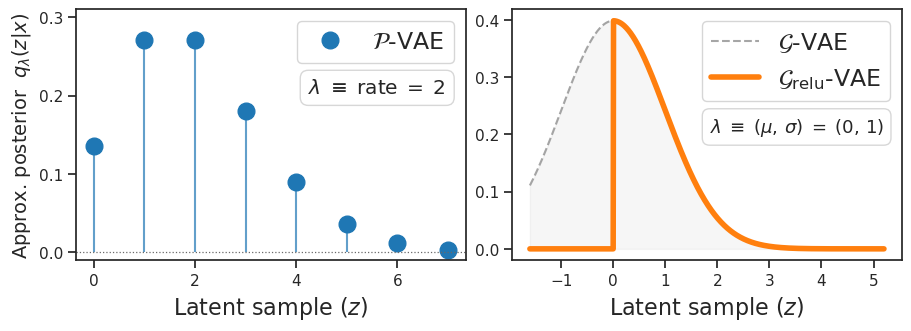
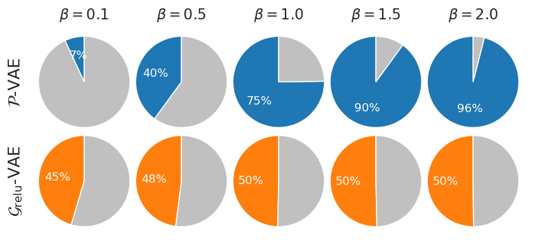
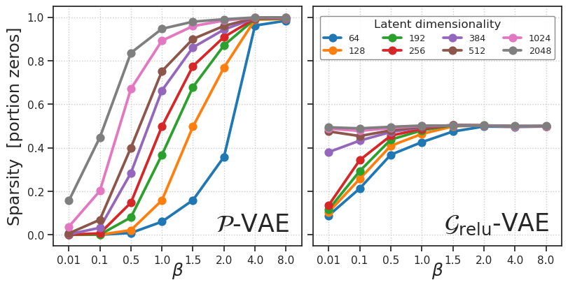
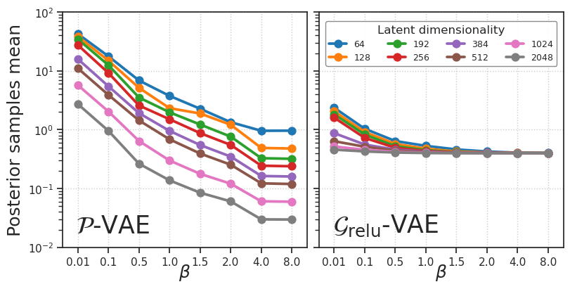
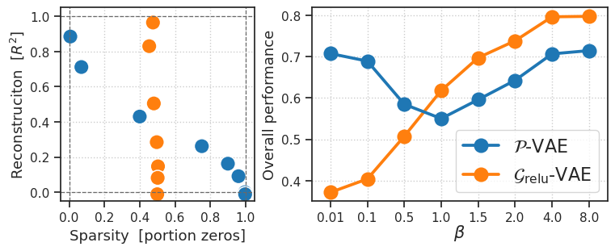
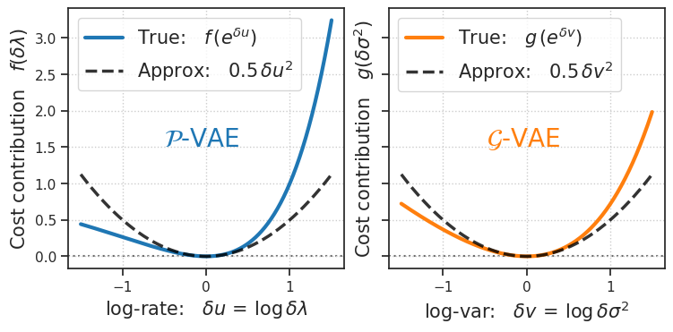
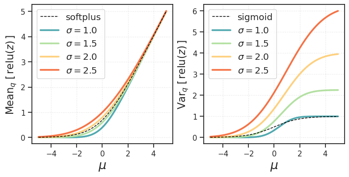

(10) metabolic cost pvae (CCN 2026) figs#
project = P-VAE, host = chewie, device = cuda:1
Motivation:
Goal: MetabolicCost
device_idx = 1
device = f'cuda:{device_idx}'
print(f"device: {device} ——— host: {os.uname().nodename}")
device: cuda:1 ——— host: chewie
Fig setup#
fig_dir = 'ccn2026_metabolic_cost'
fig_dir = fig_base_dir / fig_dir
fig_dir.mkdir(parents=True, exist_ok=True)
sorted(os.listdir(str(fig_dir)))
['dists_poisson_grelu.pdf',
'portion_zeros.pdf',
'portion_zeros_pie.pdf',
'posterior_sample_means.pdf']
Dist plots#
pal = {'pois': 'C0', 'gaus-relu': 'C1'}
def plot_dists(figsize=(9, 3.2), add_labels=True):
fig, axes = create_figure(nrows=1, ncols=2, figsize=figsize)
# --- Left Plot: Poisson ---
ax = axes[0]
lamb = 2
x_k = np.arange(0, 8)
y_pmf = sp_stats.poisson.pmf(x_k, lamb)
ax.vlines(x_k, 0, y_pmf, colors=pal['pois'], lw=1.5, alpha=0.7)
ax.plot(x_k, y_pmf, 'o', color=pal['pois'], markersize=12, label=r'$\mathcal{P}$-VAE')
ax.axhline(0, color='dimgrey', ls=':', lw=0.9)
ax.legend(fontsize=17, frameon=True, loc='upper right')
ax.set_ylim((-0.01, 0.31))
ax.locator_params(nbins=4)
# Param box for Poisson
ax.text(0.95, 0.725, r'$\lambda \;\equiv\; \mathrm{rate} \;=\; 2$',
transform=ax.transAxes, fontsize=14.5,
verticalalignment='top', horizontalalignment='right',
bbox=dict(boxstyle='round,pad=0.4', facecolor='white',
edgecolor='lightgrey', alpha=0.9))
# --- Right Plot: Truncated Gaussian (ReLU) ---
ax = axes[1]
x_grid = np.linspace(-1.6, 5.2, 1000)
y_pdf = sp_stats.norm.pdf(x_grid, loc=0, scale=1)
ax.fill_between(x_grid, y_pdf, color='grey', alpha=0.07)
ax.plot(x_grid, y_pdf, color='grey', alpha=0.7, linestyle='--', label=r'$\mathcal{G}$-VAE')
y_relu = np.where(x_grid < 0, 0, y_pdf)
ax.plot(x_grid, y_relu, color=pal['gaus-relu'], lw=4, label=r'$\mathcal{G}_\mathrm{relu}$-VAE')
ax.legend(fontsize=17, frameon=True, loc='upper right')
# Param box for Gaussian
ax.text(0.954, 0.575, r'$\lambda \;\equiv\; (\mu,\,\sigma) \;=\; (0,\,1)$',
transform=ax.transAxes, fontsize=13,
verticalalignment='top', horizontalalignment='right',
bbox=dict(boxstyle='round,pad=0.4', facecolor='white',
edgecolor='lightgrey', alpha=0.9))
if add_labels:
# axes[0].set_ylabel('Approx. posterior ' + r'$q_{\lambda}(z)$', fontsize=14)
axes[0].set_ylabel('Approx. posterior ' + r'$q_{\lambda}(z \vert x)$', fontsize=14)
axes[0].set_xlabel('Latent sample ' + r'$(z)$', fontsize=16)
axes[1].set_xlabel('Latent sample ' + r'$(z)$', fontsize=16)
plt.show()
return fig
fig = plot_dists()
# fig.savefig(fig_dir / 'dists_poisson_grelu.pdf', bbox_inches='tight')

Results dir#
results_sata_dir = '/mnt/sata/Hadi/Hadi_Results_Backup'
print(os.listdir(results_sata_dir))
['results_2025-08', 'results_2025-04', 'results_2025-03', 'results_2025-10', 'results_2025-07']
results_dir = pjoin(results_sata_dir, 'results_2025-10')
fits = [f for f in os.listdir(results_dir) if 'MetabolicCost' in f]
fits = sorted(fits, key=alphanum_sort_key)
len(fits)
176
Load results#
info_keys = ['str_model', 'n_latents', 'kl_beta']
df_metabolic_cost = collections.defaultdict(list)
for f in tqdm(fits):
load = np.load(pjoin(results_dir, f), allow_pickle=True).item()
info, results = load['info'], load['results']
# info
for k in info_keys:
df_metabolic_cost[k].append(
info.get(k, None))
# results
r2 = results['r2']
portion_zeros = results['%-zeros']
euc_dist = np.sqrt(
(1 - r2) ** 2 +
(1 - portion_zeros) ** 2
)
df_metabolic_cost['r2'].append(r2)
df_metabolic_cost['portion_zeros'].append(portion_zeros)
df_metabolic_cost['euc_dist'].append(euc_dist)
df_metabolic_cost['lifetime'].append(results['lifetime'])
df_metabolic_cost['samples_mean'].append(
results['samples_final'].mean())
df_metabolic_cost['posterior_mean'].append(
results['posterior_mean'])
df_metabolic_cost = pd.DataFrame(df_metabolic_cost)
# normalize the euclidean dist
df_metabolic_cost['euc_dist'] /= np.sqrt(2)
info
{'checkpoint': 3000,
'timestamp': '2025_10_13,17:55',
'seed': 0,
'dataset': 'vH16',
'type': 'poisson',
'latent_act': None,
'n_latents': 4096,
'str_model': 'poisson+amort',
'archi': '<lin|lin>',
'seq_len': 1,
'kl_beta': 8.0,
'n_params': 2101248,
'n_iters_train': 312000}
df_metabolic_cost
| str_model | n_latents | kl_beta | r2 | portion_zeros | euc_dist | lifetime | samples_mean | posterior_mean | |
|---|---|---|---|---|---|---|---|---|---|
| 0 | gaussian+relu+amort | 32 | 0.10 | 0.258601 | 0.189858 | 0.776531 | 0.448035 | 1.109768 | 1.109621 |
| 1 | gaussian+relu+amort | 32 | 0.01 | 0.281405 | 0.081654 | 0.824542 | 0.378761 | 2.521186 | 2.521179 |
| 2 | gaussian+relu+amort | 64 | 0.10 | 0.443983 | 0.213069 | 0.681328 | 0.466705 | 1.037755 | 1.037621 |
| 3 | gaussian+relu+amort | 64 | 0.01 | 0.483163 | 0.088891 | 0.740689 | 0.385468 | 2.361963 | 2.361885 |
| 4 | gaussian+relu+amort | 128 | 0.01 | 0.732195 | 0.104071 | 0.661214 | 0.401691 | 2.054607 | 2.054527 |
| ... | ... | ... | ... | ... | ... | ... | ... | ... | ... |
| 171 | poisson+amort | 512 | 8.00 | -0.010499 | 0.997947 | 0.714532 | 0.998013 | 0.119269 | 0.119245 |
| 172 | poisson+amort | 768 | 8.00 | -0.010585 | 0.998614 | 0.714592 | 0.998667 | 0.079980 | 0.079971 |
| 173 | poisson+amort | 1024 | 8.00 | -0.010606 | 0.998946 | 0.714607 | 0.998994 | 0.059709 | 0.059656 |
| 174 | poisson+amort | 2048 | 8.00 | -0.010646 | 0.999461 | 0.714635 | 0.999495 | 0.029700 | 0.029713 |
| 175 | poisson+amort | 4096 | 8.00 | -0.010879 | 0.999720 | 0.714799 | 0.999745 | 0.014725 | 0.014719 |
176 rows × 9 columns
sorted(df_metabolic_cost['n_latents'].unique())
[32, 64, 128, 192, 256, 384, 512, 768, 1024, 2048, 4096]
sorted(df_metabolic_cost['kl_beta'].unique())
[0.01, 0.1, 0.5, 1.0, 1.5, 2.0, 4.0, 8.0]
plot figs#
sorted(os.listdir(fig_dir))
['dists_poisson_grelu.pdf',
'portion_zeros.pdf',
'portion_zeros_pie.pdf',
'posterior_sample_means.pdf']
pal = {'poisson': 'C0', 'gaussian-relu': 'C1'}
selected_k = [64, 128, 192, 256, 384, 512, 1024, 2048]
str_models = ['poisson+amort', 'gaussian+relu+amort']
kl_betas = [0.1, 0.5, 1.0, 1.5, 2.0]
n_latents = 512
fig, axes = create_figure(
nrows=len(str_models),
ncols=len(kl_betas),
figsize=(10.0, 4.0),
hspace=-0.13,
wspace=-0.35,
cnst=False,
)
for i, s in enumerate(str_models):
for j, b in enumerate(kl_betas):
data = df_metabolic_cost.loc[
(df_metabolic_cost['kl_beta'] == b) &
(df_metabolic_cost['str_model'] == s) &
(df_metabolic_cost['n_latents'] == n_latents)
]
# Extract data
data = data.to_dict(orient='records')[0]
pz = data['portion_zeros']
sizes = [pz, 1 - pz]
# Determine color
key = data['str_model'].replace('+amort', '').replace('+', '-')
color_main = pal[key]
colors = [color_main, 'silver']
ax = axes[i, j]
# Capture the return values to modify text properties
wedges, texts, autotexts = ax.pie(
sizes,
colors=colors,
startangle=90,
autopct='%.0f%%'
)
# autotexts[0] is the percentage for the first slice (portion_zeros)
autotexts[0].set_color('white')
# autotexts[1] is the percentage for the remainder; hide it
autotexts[1].set_visible(False)
# Labels
if i == 0:
ax.set_title(f'$\\beta = {b}$', fontsize=15)
if j == 0:
text = (
r'$\mathcal{P}$-VAE' if 'poisson' in s else
r'$\mathcal{G}_\mathrm{relu}$-VAE'
)
ax.text(
-0.1, 0.5, text, transform=ax.transAxes,
va='center', ha='center', fontsize=17, rotation=90)
fig.savefig(pjoin(fig_dir, 'portion_zeros_pie.pdf'), bbox_inches='tight')
plt.show()

kws = dict(x='kl_beta', y='portion_zeros', hue='n_latents', palette='tab10', legend=False)
fig, axes = create_figure(1, 2, (8, 4), sharey='all')
kws['data'] = df_metabolic_cost.loc[
(df_metabolic_cost['str_model'] == 'poisson+amort') &
(df_metabolic_cost['n_latents'].isin(selected_k))
]
sns.pointplot(ax=axes[0], **kws)
kws['data'] = df_metabolic_cost.loc[
(df_metabolic_cost['str_model'] == 'gaussian+relu+amort') &
(df_metabolic_cost['n_latents'].isin(selected_k))
]
kws['legend'] = True
sns.pointplot(ax=axes[1], **kws)
# axes[0].set_title(r'$\mathcal{P}$-VAE', fontsize=18, y=1.02)
# axes[1].set_title(r'$\mathcal{G}_\mathrm{relu}$-VAE', fontsize=18, y=1.02)
axes[0].text(0.95, 0.04, r'$\mathcal{P}$-VAE', fontsize=25,
transform=axes[0].transAxes, ha='right', va='bottom')
axes[1].text(0.95, 0.04, r'$\mathcal{G}_\mathrm{relu}$-VAE', fontsize=25,
transform=axes[1].transAxes, ha='right', va='bottom')
axes[0].set_ylabel('Sparsity [portion zeros]', fontsize=17)
for ax in axes.flat:
ax.set_xlabel(r'$\beta$', fontsize=18, labelpad=-5)
# move_legend(axes[1], bbox=(1.35, 1.02))
sns.move_legend(
axes[1],
title='Latent dimensionality',
loc='upper center',
bbox_to_anchor=(0.5, 0.98),
fontsize=9.2,
title_fontsize=12,
ncol=4,
framealpha=0.9,
edgecolor='gray',
)
add_grid(axes)
fig.savefig(pjoin(fig_dir, 'portion_zeros.pdf'), bbox_inches='tight')
plt.show()

kws = dict(x='kl_beta', y='samples_mean', hue='n_latents', palette='tab10')
fig, axes = create_figure(1, 2, (8.0, 4.0), sharey='row')
ax = axes[0]
ax.set(yscale='log', ylim=(1e-2, 1e2))
ax.set_ylabel('Posterior samples mean', fontsize=18)
_df = df_metabolic_cost.loc[
(df_metabolic_cost['n_latents'].isin(selected_k)) &
(df_metabolic_cost['str_model'] == 'poisson+amort')
]
sns.pointplot(data=_df, ax=ax, legend=False, **kws)
ax = axes[1]
_df = df_metabolic_cost.loc[
(df_metabolic_cost['n_latents'].isin(selected_k)) &
(df_metabolic_cost['str_model'] == 'gaussian+relu+amort')
]
sns.pointplot(data=_df, ax=ax, legend=True, **kws)
# axes[0].set_title('Poisson', fontsize=15, y=1.02)
# axes[1].set_title('Gaussian + ReLU', fontsize=15, y=1.02)
axes[0].text(0.355, 0.04, r'$\mathcal{P}$-VAE', fontsize=25,
transform=axes[0].transAxes, ha='right', va='bottom')
axes[1].text(0.49, 0.04, r'$\mathcal{G}_\mathrm{relu}$-VAE', fontsize=25,
transform=axes[1].transAxes, ha='right', va='bottom')
for ax in axes.flat:
ax.set_xlabel(r'$\beta$', fontsize=18, labelpad=-5)
ax.grid()
# move_legend(ax, (1.3, 1.02))
sns.move_legend(
axes[1],
title='Latent dimensionality',
loc='upper center',
bbox_to_anchor=(0.5, 0.98),
fontsize=9.0,
title_fontsize=12,
ncol=4,
framealpha=0.9,
edgecolor='gray',
)
fig.savefig(pjoin(fig_dir, 'posterior_sample_means.pdf'), bbox_inches='tight')
plt.show()

pal = {'poisson+amort': 'C0', 'gaussian+relu+amort': 'C1'}
_df = df_metabolic_cost.loc[df_metabolic_cost['n_latents'] == 512]
fig, axes = create_figure(1, 2, (7.5, 3.0), width_ratios=[1, 1.5])
ax = axes[0]
ax.axvline(0, color='dimgrey', ls='--', lw=0.9)
ax.axvline(1, color='dimgrey', ls='--', lw=0.9)
ax.axhline(1, color='dimgrey', ls='--', lw=0.9)
ax.axhline(0, color='dimgrey', ls='--', lw=0.9)
sns.scatterplot(
data=_df,
x='portion_zeros',
y='r2',
hue='str_model',
palette=pal,
legend=False,
s=180,
ax=ax,
)
ax.locator_params(axis='both', nbins=6)
ax.set(xlim=(-0.05, 1.05), ylim=(-0.05, 1.05))
ax_square(ax)
ax.set_ylabel('Reconstruciton [$R^2$]', fontsize=13)
ax.set_xlabel('Sparsity [portion zeros]', fontsize=13)
ax = axes[1]
sns.pointplot(
data=_df,
x='kl_beta',
y='euc_dist',
hue='str_model',
palette=pal,
markersize=11,
ax=ax,
)
ax.set_xlabel(r"$\beta$", fontsize=15, labelpad=-0.5)
ax.set_ylabel('Overall performance', fontsize=13)
add_grid(axes)
# Fix legend labels and order
handles, labels = ax.get_legend_handles_labels()
label_map = {
'poisson+amort': r'$\mathcal{P}$-VAE',
'gaussian+relu+amort': r'$\mathcal{G}_\mathrm{relu}$-VAE',
}
# Build ordered handles/labels: Poisson first, then Gaussian+ReLU
desired_order = ['poisson+amort', 'gaussian+relu+amort']
new_handles = []
new_labels = []
for key in desired_order:
idx = labels.index(key)
new_handles.append(handles[idx])
new_labels.append(label_map[key])
ax.legend(new_handles, new_labels, title='', fontsize=16)
fig.savefig(pjoin(fig_dir, 'rate_dist_tradeoff.pdf'), bbox_inches='tight')
plt.show()

KL functions#
def plot_vae_nonlinearities(figsize=(10, 5), sharey=False):
fig, axes = create_figure(1, 2, figsize=figsize, sharey=sharey)
# 1. Define the range for the log-residuals
# Poisson: x = u = log(lambda_gain)
# Gaussian: x = v = log(sigma^2_gain) <-- log-variance
x = np.linspace(-1.5, 1.5, 400)
# 2. Define the functions
# -- Poisson --
# f(y) = y log y - y + 1
# y = exp(x) -> f(x) = x * exp(x) - exp(x) + 1
y_pois = np.exp(x)
f_val = y_pois * np.log(y_pois) - y_pois + 1
# -- Gaussian --
# g(y) = y - 1 - log(y) <-- New definition
# y = exp(x) (variance gain)
y_gauss = np.exp(x)
g_val = y_gauss - 1 - np.log(y_gauss) # Becomes: exp(x) - 1 - x
# 3. Define the Quadratic Approximations
# Poisson approx: 0.5 * u^2 (f''(1) = 1)
f_approx = 0.5 * x**2
# Gaussian approx: 0.5 * v^2 (g''(1) = 1)
# Expansion of (e^x - 1 - x) is 0.5 * x^2
g_approx = 0.5 * x**2
# 4. Plotting
# -- Plot Poisson --
ax = axes[0]
ax.plot(x, f_val, label=r'True: $f\,(e^{\delta u})$', linewidth=3.0, color='C0')
ax.plot(x, f_approx, label=r'Approx: $0.5 \, \delta u^2$', linestyle='--', linewidth=2.5, color='black', alpha=0.8)
ax.set_xlabel(r'log-rate: $\delta u \,=\, \log \delta \lambda$', fontsize=15)
ax.set_ylabel(r'Cost contribution $f(\delta \lambda)$', fontsize=15)
# -- Plot Gaussian --
ax = axes[1]
# Note: Argument to g is variance gain (exp(v))
ax.plot(x, g_val, label=r'True: $g\,(e^{\delta v})$', linewidth=3.0, color='C1')
ax.plot(x, g_approx, label=r'Approx: $0.5 \, \delta v^2$', linestyle='--', linewidth=2.5, color='black', alpha=0.8)
ax.set_xlabel(r'log-var: $\delta v \,=\, \log \delta \sigma^2$', fontsize=15)
ax.set_ylabel(r'Cost contribution $g(\delta \sigma^2)$', fontsize=15)
for ax in axes.flat:
ax.legend(fontsize=15, loc='upper left')
ax.axhline(0, ls=':', color='dimgrey', zorder=-1)
ax.grid()
axes[0].text(0.62, 0.45, r'$\mathcal{P}$-VAE', fontsize=20, color='C0',
transform=axes[0].transAxes, ha='right', va='bottom')
axes[1].text(0.62, 0.45, r'$\mathcal{G}$-VAE', fontsize=20, color='C1',
transform=axes[1].transAxes, ha='right', va='bottom')
plt.show()
return fig
fig = plot_vae_nonlinearities((7.4, 3.6), True)
# fig.savefig(pjoin(fig_dir, 'kl_f_g.pdf'), bbox_inches='tight')

Gaussian rectified moments#
import torch
import numpy as np
import matplotlib.pyplot as plt
import matplotlib.cm as cm
def tonp(x):
return x.detach().cpu().numpy()
# Re-implementing the verified PyTorch logic here for the plot
def get_rectified_moments(mu, sigma):
"""
Computes analytical mean and variance for Rectified Gaussian: max(0, N(mu, sigma^2))
"""
# Standardize
alpha = mu / sigma
# PDF and CDF of standard normal
pdf = (1.0 / np.sqrt(2 * np.pi)) * torch.exp(-0.5 * alpha**2)
cdf = 0.5 * (1 + torch.erf(alpha / np.sqrt(2)))
# First Moment: E[y]
# Formula: mu * Phi(alpha) + sigma * phi(alpha)
mean = mu * cdf + sigma * pdf
# Second Moment: E[y^2]
# Formula: (mu^2 + sigma^2) * Phi(alpha) + mu * sigma * phi(alpha)
second_moment = (mu**2 + sigma**2) * cdf + mu * sigma * pdf
# Variance: E[y^2] - (E[y])^2
var = second_moment - mean**2
return mean, var
def plot_rectified_moments(colors='Spectral_r', lim=5, figsize=(7, 3.5)):
# 1. Setup Data
mus = torch.linspace(-lim, lim, 1000)
sigmas = [1.0, 1.5, 2.0, 2.5]
# 2. Setup Plot
fig, axes = create_figure(1, 2, figsize=figsize)
# 3. Handle Colors (Colormap string vs List of colors)
color_list = []
if isinstance(colors, str):
# It's a colormap name -> Generate list using the clip range
cmap = plt.get_cmap(colors)
c_min, c_max = 0.2, 0.8
for i in range(len(sigmas)):
fraction = i / (len(sigmas) - 1) if len(sigmas) > 1 else 0.5
color_idx = c_min + (c_max - c_min) * fraction
color_list.append(cmap(color_idx))
else:
# It's a specific list -> Use directly
color_list = colors
# 4. Plot the Canonical References
x_ref = np.linspace(-lim, lim, 1000)
# Reference for Mean: Softplus
y_softplus = np.log(1 + np.exp(x_ref))
axes[0].plot(x_ref, y_softplus, color='k', linestyle='--', linewidth=1.0,
label='softplus', zorder=5, alpha=1.0)
# Reference for Variance: Sigmoid
y_sigmoid = 1 / (1 + np.exp(-x_ref))
axes[1].plot(x_ref, y_sigmoid, color='k', linestyle='--', linewidth=1.0,
label='sigmoid', zorder=5, alpha=1.0)
# 5. Iterate and Plot Sigmas
for i, s_val in enumerate(sigmas):
# Create sigma tensor
sigma_tensor = torch.full_like(mus, s_val)
# Calculate moments
mean_out, var_out = get_rectified_moments(mus, sigma_tensor)
# Convert to numpy
mu_np = tonp(mus)
mean_np = tonp(mean_out)
var_np = tonp(var_out)
# Select color (cycle if list is shorter than sigmas)
color = color_list[i % len(color_list)]
label = f'$\sigma={s_val}$'
# Plot
axes[0].plot(mu_np, mean_np, color=color, label=label, linewidth=2.5)
axes[1].plot(mu_np, var_np, color=color, label=label, linewidth=2.5)
# 6. Formatting
axes[0].set_ylabel(r"$\mathrm{Mean}_q\;[\,\mathrm{relu}(z)\,]$", fontsize=15)
axes[1].set_ylabel(r"$\mathrm{Var}_q\;[\,\mathrm{relu}(z)\,]$", fontsize=15)
for ax in axes.flat:
ax.set_xlabel(r"$\mu$", fontsize=18)
ax.legend(fontsize=13.3)
ax.grid(alpha=0.5)
plt.show()
return fig
cmap = sns.color_palette('Spectral_r', n_colors=18)
cmap
colors = [cmap[i] for i in [2, 5, -7, -4]]
fig = plot_rectified_moments(colors)
# fig.savefig(pjoin(fig_dir, 'rectified_moments.pdf'), bbox_inches='tight')
